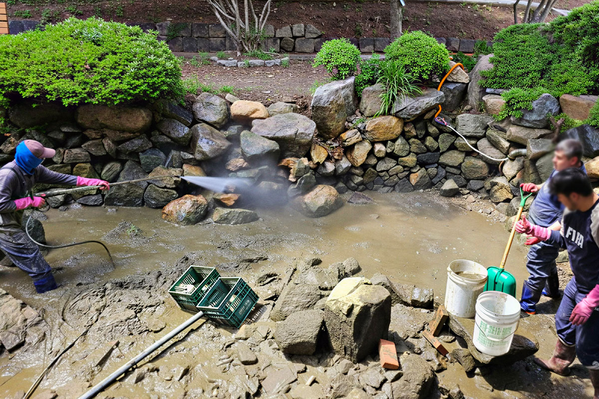

연못 청소
연못의 수질과 주변 환경을 고려해 침전물과 오염을 제거합니다.
연못의 수질과 주변 환경을 고려해 침전물과 오염을 제거합니다. 작업 전 현장 상태를 확인하고 시설 이용에 방해가 적도록 공정을 계획합니다.

연못 청소 대상
연못
공원
숙박시설
현장 규모와 오염 상태에 맞춰 작업 범위와 방법을 결정합니다.
연못 청소 갤러리
작업 전과 후를 확인할 수 있습니다
작업 과정이 담긴 동영상
사진과 영상 갤러리에서 더 많은 작업 과정을 확인할 수 있습니다.